Curso de Google Documentos › Insertar › Lección 22
Lección 22 de 53 · menú Insertar
Cómo poner enlaces y marcadores en Google Docs
Fecha del video: · Programado
¿Querés poner links en Google Docs? Con Insertar → Enlace (o Ctrl+K) convertís un texto en un enlace a una página web, y con Insertar → Marcador marcás un lugar del documento para que un enlace te lleve ahí con un clic. Acá lo vemos paso a paso.
En el ejemplo usamos el documento «Lista de compras». Agregamos dos renglones de prueba, «Ver la ayuda de Google» y «Volver arriba», y al final los borramos junto con el marcador, así el documento quedó como estaba. Ojo con los nombres: la ayuda de Google en español dice «Vínculo» y «Favorito»; en la pantalla dice Enlace y Marcador.
Paso 1: seleccioná el texto y abrí Insertar → Enlace
Seleccioná el texto que querés convertir en link (en el ejemplo, «Ver la ayuda de Google»). Arriba, en la barra de menús, tocá Insertar y después Enlace. A la derecha de la opción figura su atajo: Ctrl+K (en Mac, ⌘+K), que abre lo mismo sin pasar por el menú.
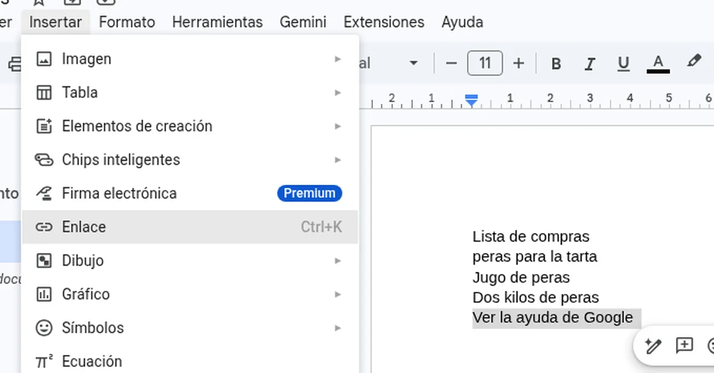
Paso 2: pegá la dirección y tocá «Aplicar»
Se abre una ventana con el campo Buscar o pegar un enlace y el botón Aplicar. Debajo, Docs sugiere archivos de tu Drive, las pestañas del documento y páginas web (en la captura difuminamos los archivos). Abajo de todo está Títulos, marcadores y pestañas, que usamos en el paso 5.
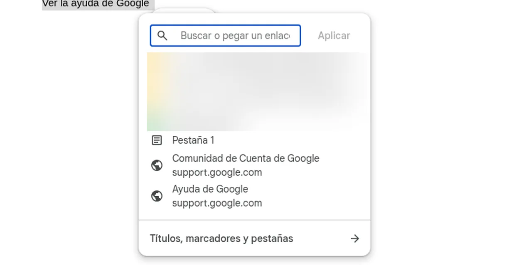
Pegá la dirección de la página (en el ejemplo, la ayuda oficial: support.google.com/docs) y tocá Aplicar.
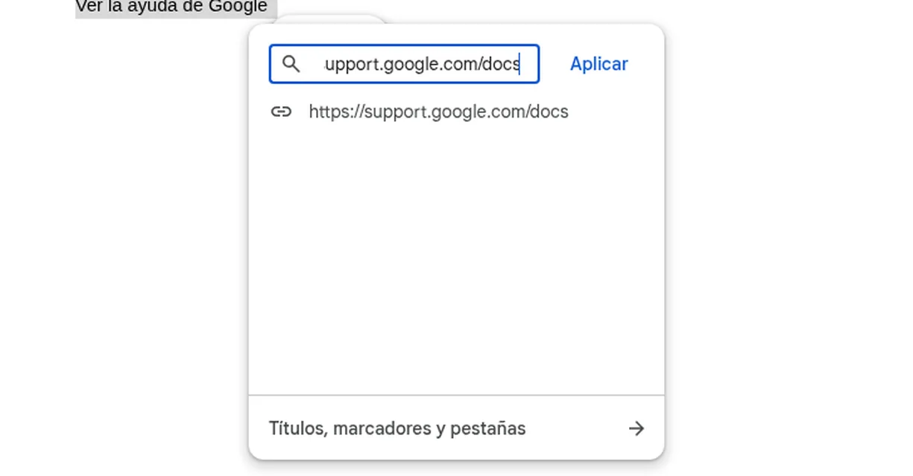
El texto queda azul y subrayado: ya es un enlace.
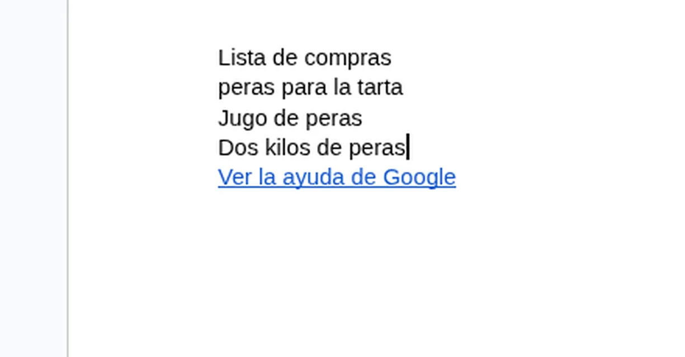
Paso 3: la tarjeta del enlace (copiar, editar, quitar)
Hacé clic sobre el enlace y aparece su tarjeta, con el título y la dirección de la página y tres íconos: copiar el enlace, editar (el lápiz, para cambiar el texto o la dirección) y Quitar enlace.
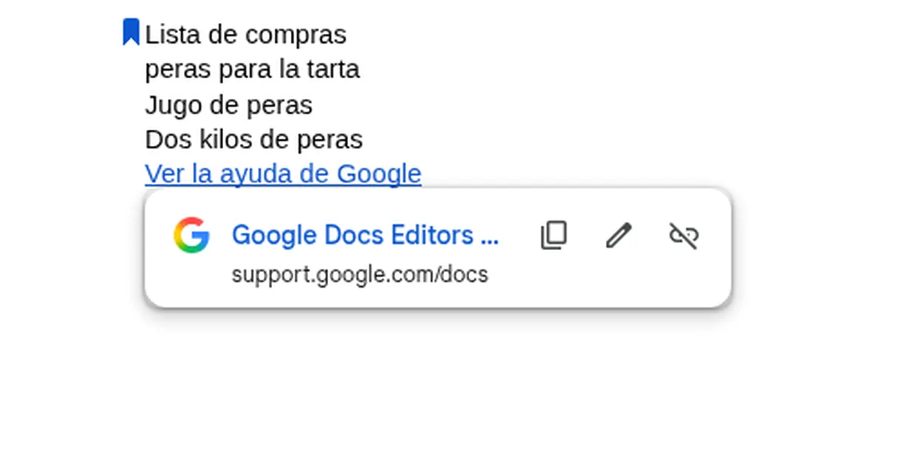
Paso 4: quitar un enlace
En la tarjeta tocá Quitar enlace (el último ícono). El texto se queda en el documento, pero vuelve a negro y sin subrayado: ya no es un link.
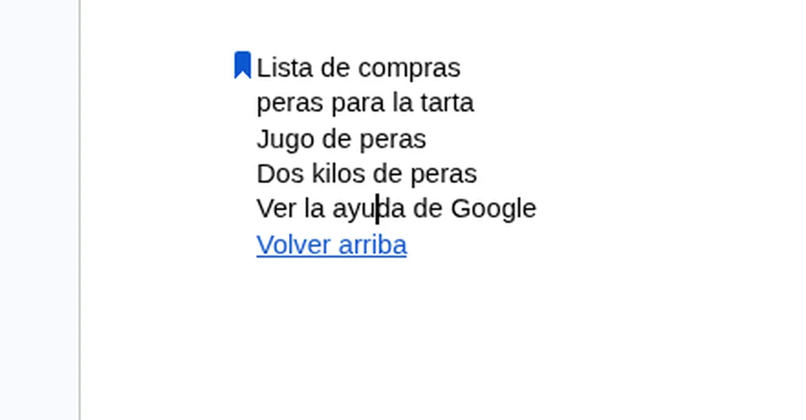
Paso 5: poné un marcador
Un marcador señala un lugar exacto del documento. Hacé clic donde lo querés (en el ejemplo, al principio de «Lista de compras») y andá a Insertar → Marcador.
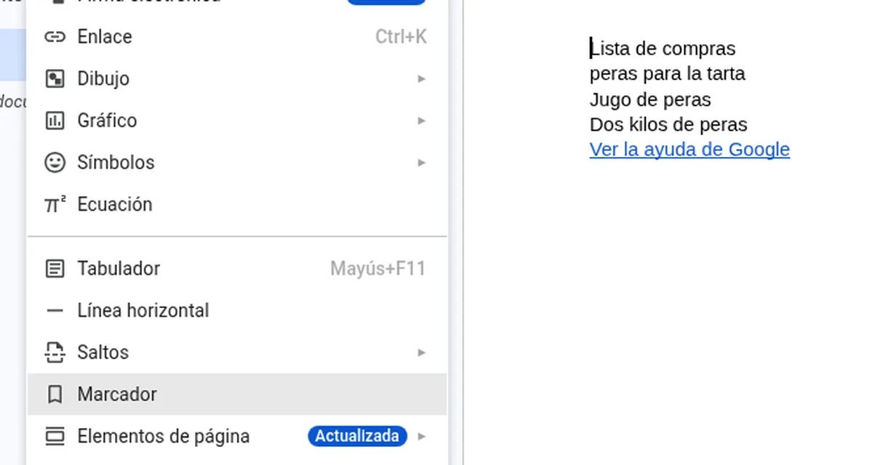
Aparece un ícono azul a la izquierda del renglón. Al tocarlo se ve su tarjeta Marcador, con un ícono para copiar su enlace y una papelera para borrarlo.
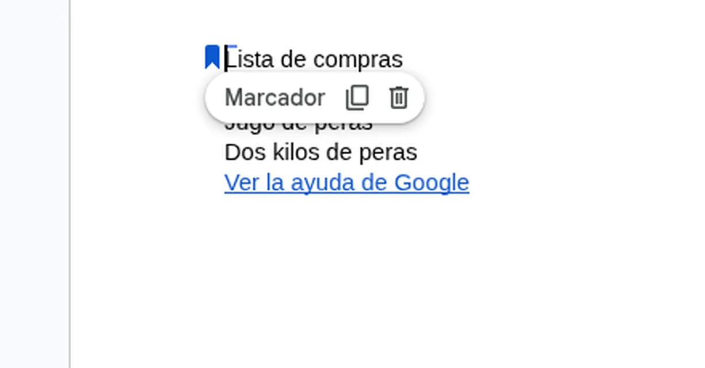
Paso 6: enlazá un texto al marcador
Seleccioná el texto que va a llevar al marcador (en el ejemplo, «Volver arriba», al final), apretá Ctrl+K y en la ventana tocá Títulos, marcadores y pestañas. En la sección Marcadores aparece el que creaste: elegilo.
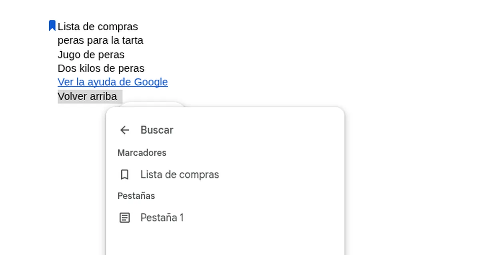
«Volver arriba» queda azul. Al tocarlo, su tarjeta dice Marcador y el renglón al que lleva («Lista de compras»); un clic ahí y volvés a ese lugar. Es muy útil en documentos largos.
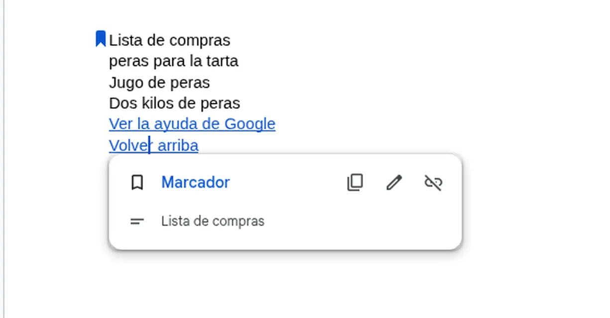
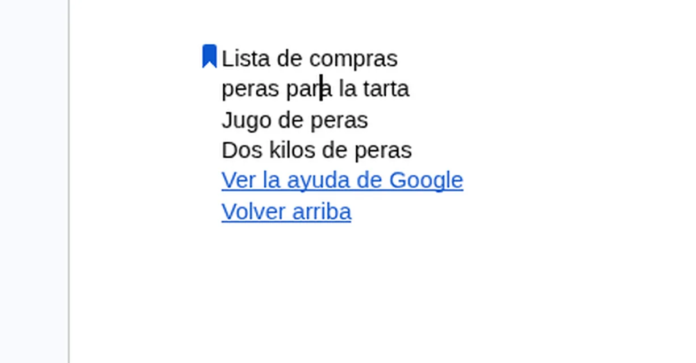
Al final borramos los renglones de prueba y el marcador, y el documento quedó como al principio.
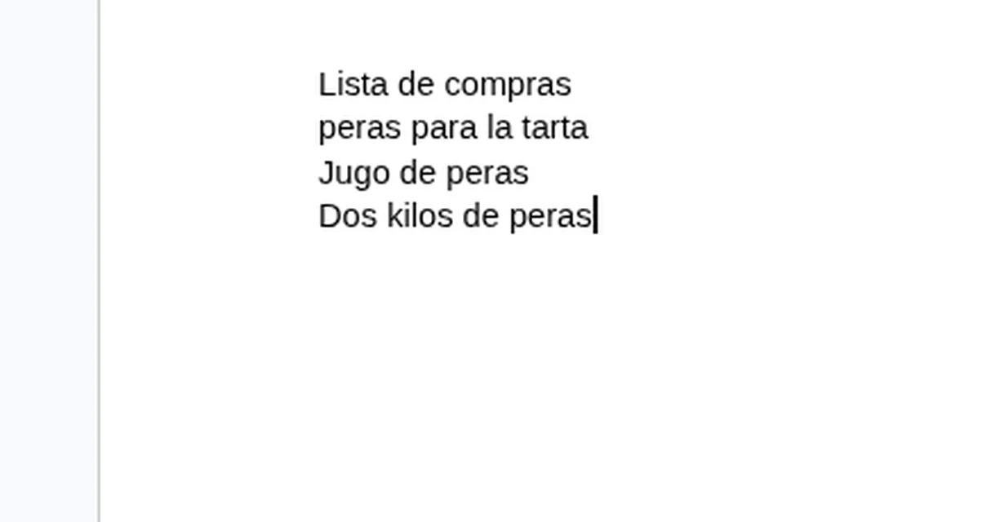
Fuentes oficiales: Cómo trabajar con vínculos y favoritos y Combinaciones de teclas de Documentos de Google (Ctrl + k: insertar o editar un vínculo). Mirá también el menú Insertar completo (video: Google Docs: menú Insertar paso a paso) y la lección anterior, Menú desplegable y chips de marcador de posición.
Mirá el Short
Estreno del Short: 02/12/2026 · 17:00 (hora Argentina)
Video relacionado: Google Docs: menú Insertar paso a paso (tutorial completo) — el video largo del menú Insertar (verlo en YouTube).
Fuente oficial: Ayuda de Editores de Documentos de Google. Capturas propias en un documento de ejemplo («Lista de compras»). El video usa voz generada con IA.